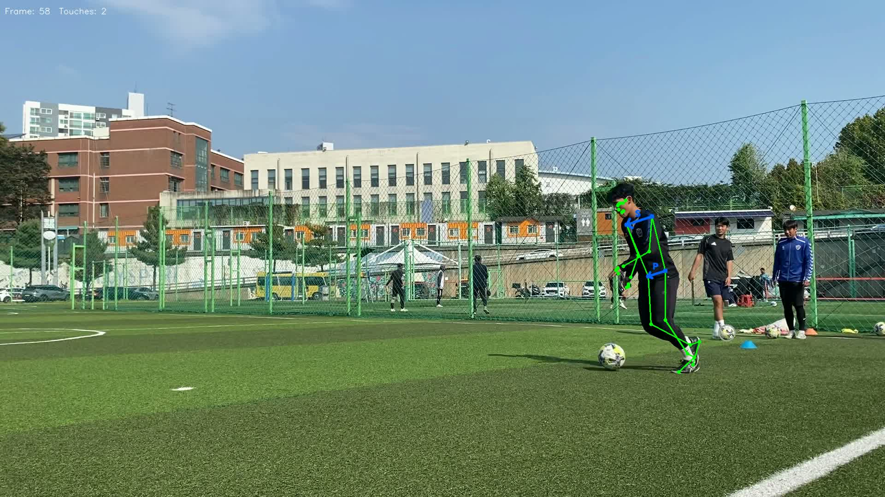
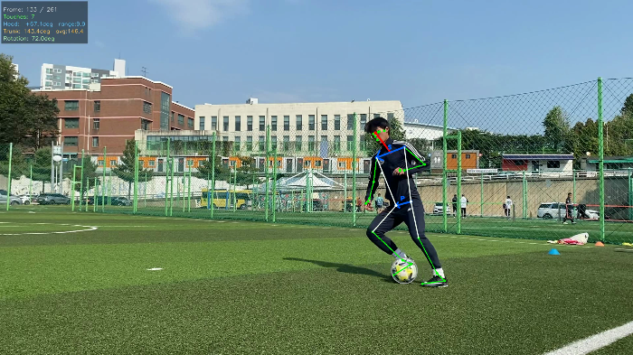

Dribble analysis
드리블을 관찰하고, 움직임을 수치로 설명하다.

Overview
영상 속 움직임을,
검토 가능한 지표로.
명지대학교 축구부의 드리블 영상을 바탕으로 헤드업, 상체 각도, 어깨 움직임을 측정하는 연구입니다. 한 대의 카메라에서 추정한 관절과 공의 위치를 원본 영상에 겹쳐, 측정값이 실제 동작을 설명하는지 확인했습니다.
관절·공 추적부터 터치 후보 검출, 지표 계산과 원본 프레임 검수까지 전 과정을 담당했습니다.
Demo
관절과 공의 움직임을 한 화면에.
Tracking
공을 찾는 것과,
선수의 공을 찾는 것은 달랐습니다.
배경에 놓인 다른 공으로 추적 대상이 바뀌면 터치 시점과 자세 평가 구간도 함께 틀어졌습니다. YOLO 검출 후보 중 발목에 가까운 공을 선택하고, SAM2 추적이 발목에서 250px 이상 벗어나는 상태가 5회 이어지면 다시 탐색하도록 구성했습니다.
후속 실험에서는 YOLO11s로 매 프레임 공을 재검출하며 추적 결과를 비교했습니다. 검출 정확도뿐 아니라 ‘어느 공을 계속 따라가는가’를 따로 확인한 작업입니다.

Evaluation
큰 움직임이 곧 좋은 동작은 아니었습니다.
공 터치 전후 ±10, ±24, ±30프레임처럼 구간을 바꿔 어깨 회전을 비교했습니다. 낮은 평가등급의 영상에서도 큰 값이 나왔고, 몸 전체의 방향 전환이 함께 포함되는 문제를 확인했습니다.
현재 논문에는 어깨선의 3차원 방향을 평활화한 뒤, 연속 프레임 간 변화각을 시간당 속도로 바꾸고 영상 전체의 유효 구간에서 평균하는 방법을 사용합니다. 이 값은 어깨 움직임의 빠르기를 나타내며, 공 방향에 맞춘 반응의 정확도를 직접 평가하지 않습니다.
2026.10.09 논문 정리 기준. 단안 3D 추정값의 오차와 채점 타당성을 계속 검토하고 있으며, 현장용 자동 평가 도구로 검증된 상태는 아닙니다.
Stack & evidence
Python으로 측정하고, 원본으로 확인합니다.
Python / MediaPipe / YOLO / SAM2 / NumPy / SciPy / OpenCV